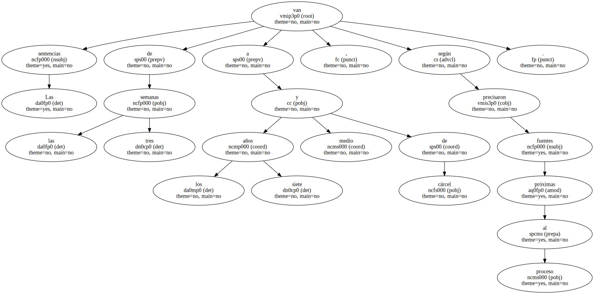
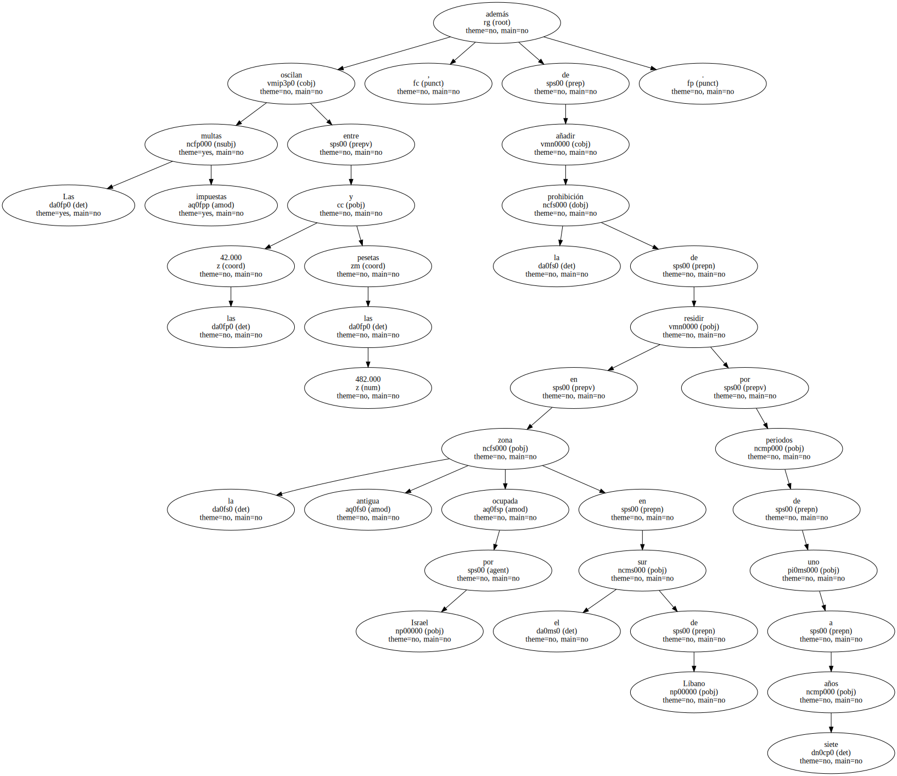
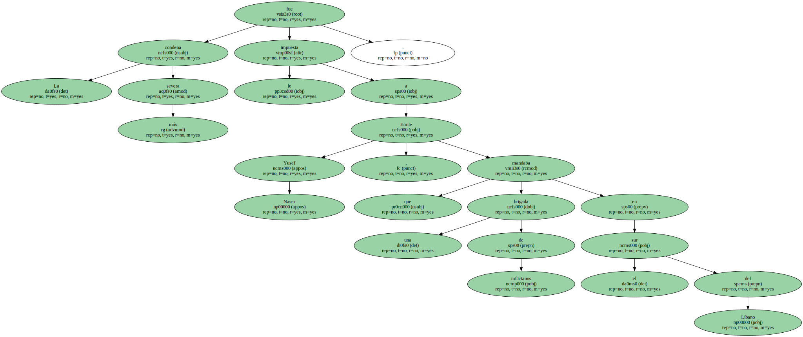
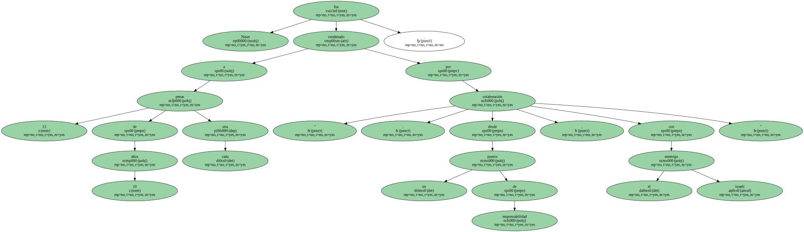
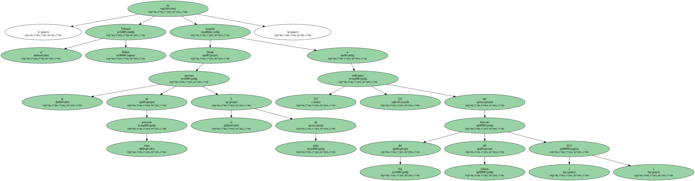
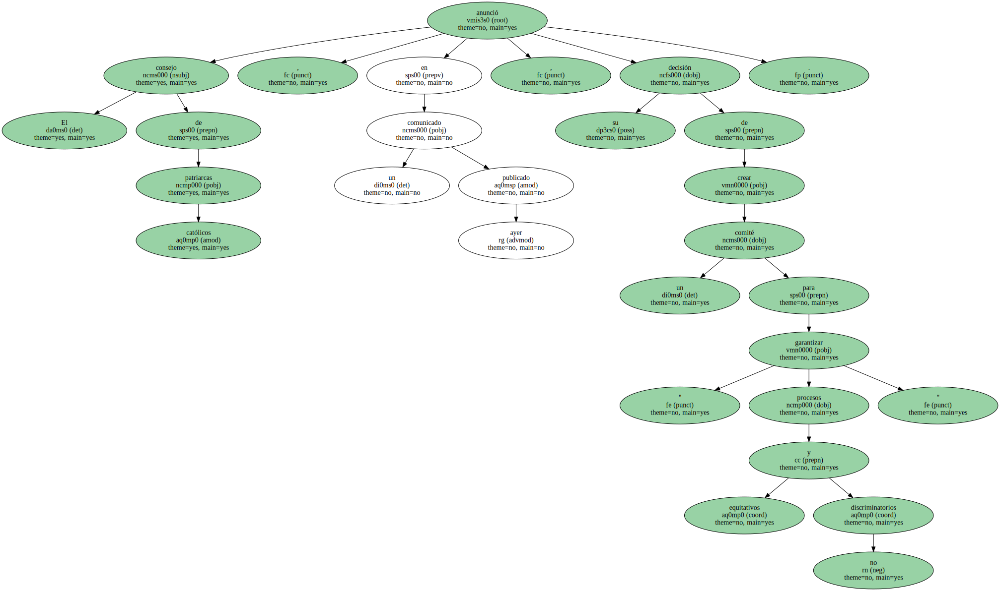

El Tribunal Militar de Beirut , que celebra sesiones maratonianas tres veces por semana para juzgar a más de 2.200 libaneses sospechosos de " colaboración " con Israel , condenó ayer a 42 personas.

Las sentencias van de las tres semanas a los siete años y medio de cárcel , según precisaron fuentes próximas al proceso.
Las multas impuestas oscilan entre las 42.000 y las 482.000 pesetas , además de añadir la prohibición de residir en la antigua zona ocupada por Israel en el sur de Líbano por periodos de uno a siete años.
La condena más severa le fue impuesta a Emile Yusef Naser , que mandaba una brigada de milicianos en el sur del Líbano.
Naser fue condenado a 12 penas de 10 años cada una por " colaboración , desde un puesto de responsabilidad , con el enemigo israelí ".
Desde la apertura de estos procesos el 5 de junio , el Tribunal Militar ha juzgado a 575 EX milicianos del Ejército del Sur del Líbano ( ELS ).
El consejo de patriarcas católicos anunció , en un comunicado publicado ayer , su decisión de crear un comité para " garantizar procesos equitativos y no discriminatorios ".
